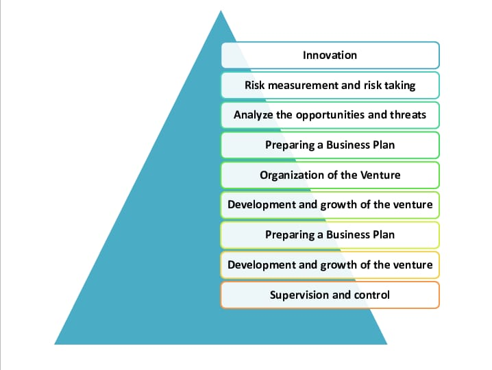

One of the most important traits of entrepreneurs is self-motivation. When you want to succeed, you need to be able to push yourself. You aren't answerable to anyone else as an entrepreneur, and that sometimes means that it's hard to get moving without anyone to make you.